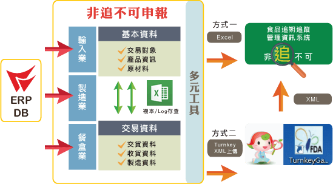

做四方的生意、賺八方的錢財，多元化的通路經營是關鍵！連鎖賣場KA的合約管理、出貨允收效期…電商網購訂單越多越好但衍生的接單、對帳等的困擾也倍增…門市與百貨專櫃都是設點銷售但背後的管理方式差異甚大…觀光工廠從散客與團客控管、館務到結帳甚至退稅服務等作業要在一小時內緊密銜接…
鼎新即時因應法令，「非追不可申報工具」，自動從您的ERP系統中，依設定抓出「非追不可」所需表單資料，再依產品類型、屬性等做選填或修改，隨即匯出Excel或XML格式之完成檔，藉由網頁或Turnkey直接上傳，不須換算、不用剪貼，複雜工作、讓您簡單搞定！

供需【連】的起、商機【鎖】的住，品牌價值再加乘
全球消費市場競爭激烈，經營模式逐漸走向連鎖經營，如何創造加盟主及總部讓利、價值共享、互利共存，共創三贏？成功的連鎖經營不僅能協助企業做好品質把關，更能提升品牌價值與競爭力！ 知名連鎖飲料店 50 嵐目前全台有 547 家，在中區已有 210 家 門市，近年中區 50 嵐更以新品牌「KOI」迅速拓展海外市場，雅嵐股份有限公司(中區 50 嵐、KOI)集團行政管理處吳順元副總經理現身說法，不藏私地分享如何跨越語言、時間及空間障礙，改善管理流程，讓資訊的傳遞更即時、透通，實踐連鎖加盟精實管理策略；中華工商流 通發展協會李孟熹創會會長也將於課程中分享連鎖店經營發展的成功關鍵，協助企業聯手總部、加 盟主、供應商共創品牌價值，讓營收持續成長，抓住市場商機！
{{slide.content}}